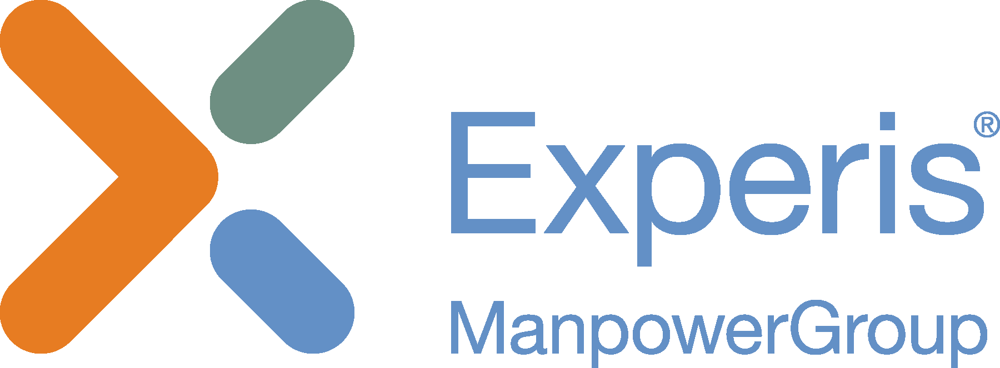

Designing and owning two internal tools, built by consultants between client projects.Progettare e gestire due strumenti interni, sviluppati dai consulenti tra un progetto e l'altro.

Experis is a consulting company working on time-and-material contracts. Consultants between client projects form an in-house team that builds the company's own tools.Experis è una società di consulenza che lavora a tempo e materiali. I consulenti senza un progetto cliente attivo formano un team interno che sviluppa gli strumenti dell'azienda.
I was mainly product designer — and product owner on parts of the work — bridging stakeholders, design and development.Ero soprattutto product designer — e su alcune parti product owner — a fare da ponte tra stakeholder, design e sviluppo.
Tracks managers' performance based on the consultant time they sell to clients.Misura la performance dei manager in base al tempo dei consulenti che vendono ai clienti.
Supports recruiting and the hand-offs between sales, accounts, recruiters and talents.Supporta il recruiting e i passaggi tra sales, account, recruiter e candidati.
Act fast to learn faster.Muoviti in fretta per imparare più in fretta.
In vertical domains, when a user asks for A, they mean A.Nei contesti verticali, se un utente chiede A intende A.
Show a proof of concept before committing to big tables and screens.Mostra un proof of concept prima di impegnarti su tabelle e schermate importanti.
Don't rely on external tools unless you're 150% sure they'll last.Non affidarti a strumenti esterni se non sei sicuro al 150% che dureranno.